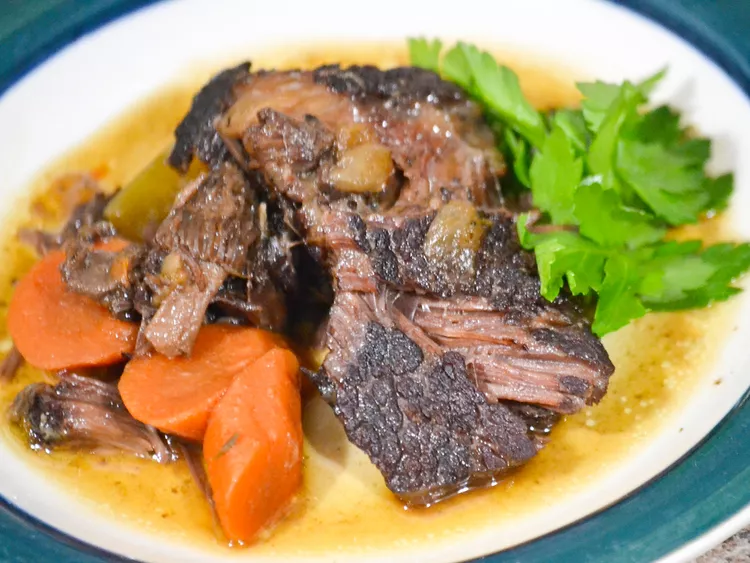

Braised Beef Cheeks

Description
This has been a hit with everyone that has tried it.
Ingredients
- 2 tablespoons olive oil
- 5 pounds trimmed beef cheeks
- 1 large onion, diced small
- 1 carrot, diced small
- 4 cloves garlic, minced
- 4 cups beef stock
- 1 cup red wine
- ⅓ cup dried porcini mushrooms
- 2 cubes beef bouillon
- 1 teaspoon dried thyme
- 2 bay leaves
Steps
- Preheat oven to 275 degrees F (135 degrees C).
- Heat olive oil in a large Dutch oven over medium-high heat. Add beef in batches and cook until browned, about 4 minutes per side. Add onion and carrot; cook until tender, about 20 minutes. Stir in garlic and cook until fragrant, about 2 minutes.
- Pour beef stock and wine into the Dutch oven; bring to a boil. Stir in porcini mushrooms, bouillon cubes, thyme, and bay leaves. Lay a piece of parchment paper over the surface. Cover with a tight lid.
- Bake in the preheated oven until beef is very tender, 5 to 6 hours.
- Transfer beef to a plate. Discard bay leaves. Blend cooking liquid with an immersion blender to make a smooth sauce. Serve beef with sauce.